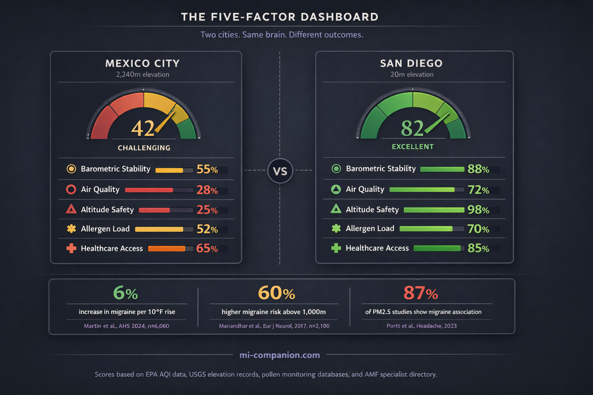

By Rustam Iuldashov
30 years lived experience with chronic migraine | Sources: 25 peer-reviewed references including Headache (n=4,375), Cureus (systematic review), Environment International (n=18,921), European Journal of Neurology (n=2,100) | Last updated: March 11, 2026
Medical Review: This content is based on peer-reviewed research from Cureus, Headache, Environment International, Ecotoxicology and Environmental Safety, European Journal of Neurology, Neurology, Cephalalgia, Frontiers in Physiology, Journal of Research in Medical Sciences, Pakistan Journal of Medical Sciences, European Journal of Medical Research, and Current Pain and Headache Reports.
Important Notice: This article is for informational purposes only and does not replace professional medical advice. The author is not a licensed physician or healthcare professional. Always consult your doctor before making decisions about relocation based on health factors.
Key Takeaways
- Barometric pressure fluctuations — not just low pressure — are the strongest weather-related migraine trigger, with effects detectable up to 6 hours before the headache[1][2]
- Air pollution (PM2.5, NO₂, ozone, CO) significantly increases migraine risk, and the effect is amplified on hot days — making pollution and heat a compound threat[6][7]
- Living above 1,000 meters raises migraine prevalence by up to 60%, likely through chronic hypoxia that activates the CGRP pathway your medications target[10][13]
- Allergic rhinitis increases migraine risk 1.5–4 times through shared histamine and inflammatory pathways — making pollen calendars a medical consideration[14][15]
- Rising temperatures increase migraine occurrence by approximately 6% per 10°F, and climate change is intensifying every environmental trigger simultaneously[19][21]
- Only 564 certified headache specialists serve the entire U.S. — checking healthcare access before you move is as important as checking the weather[22][23]
The Question Nobody Answers
Three a.m. Ice pack on the temple. You type “best cities for migraines” into Google and get a listicle. San Diego, maybe. Honolulu. Avoid the Midwest.
But those lists are built on vibes, not science. And the science says something harder to accept: the city that rescues one migraine brain might wreck another. Your map isn’t someone else’s.
There is, however, a framework for drawing it. Five environmental factors shape whether a city will work with your neurology or against it — and most people have never evaluated a single one.
Factor 1: The Barometric Roller Coaster
The storm rolls in. So does the pain. For decades, doctors shrugged. The research finally caught up.
A 2025 systematic review following PRISMA guidelines confirmed what millions of patients already knew: barometric pressure fluctuations are consistently associated with increased migraine frequency.[1] But the critical detail is the word fluctuations. Not low pressure. Not high pressure. The swing.
A Japanese study published in Headache tracked 336,951 headache events across 4,375 people using a smartphone app and AI analysis. The strongest predictor wasn’t the pressure reading on any given day — it was a significant barometric drop six hours before the headache.[2] Your brain feels the front approaching before the rain arrives.
A prospective diary study confirmed the pattern: migraine frequency rose when pressure fell more than 5 hPa from one day to the next.[3] Another found that 73–75% of migraine patients developed attacks when pressure dropped 6–10 hPa below the standard 1013 hPa.[4] And a 2025 meta-analysis of 31 studies put a number on it: ambient pressure changes carried an odds ratio of 1.07 (95% CI 1.01–1.15) for triggering migraine attacks.[5]
The number sounds small. It isn’t. Applied across billions of weather events and hundreds of millions of people with migraine, a 7% increase in attack probability translates into enormous collective suffering.
Seek stability. Coastal cities with mild maritime climates tend to have smaller pressure swings than inland areas where weather fronts collide. Denver’s cycling mountain weather may be harder on your brain than San Diego’s ocean-buffered calm. But “stable” is relative — and individual. Track your own pressure-pain pattern first.
Factor 2: The Air You Breathe
Air pollution doesn’t stay in your lungs. It reaches your brain — and your brain, if you live with migraine, is already running at a lower threshold for pain.
A 2023 systematic review in Headache examined every available study linking air pollutants to migraine outcomes. The results were striking: point estimates were above 1.00 for carbon monoxide in 100% of studies, PM2.5 in 87%, ozone in 88%, and nitrogen dioxide in 78%.[6] The most consistent signal came from NO₂ — the invisible exhaust of traffic and industry.
The interaction with heat makes things worse. A time-stratified case-crossover study of nearly 19,000 emergency department visits in Seoul found that PM2.5 raised migraine risk by about 3% per interquartile increase. But on high-temperature days, that risk more than doubled — an odds ratio of 1.068 versus 1.021.[7] Heat and pollution aren’t parallel threats. They’re multipliers.
Long-term exposure may actually create new migraine patients. A prospective cohort with 12.5 years of follow-up documented a dose-response relationship between chronic air pollution exposure and the risk of developing migraine for the first time.[8]
Then there’s wildfire smoke. A case-crossover analysis of nearly 10,000 Californians from 2006–2020 found elevated odds of headache-related emergency visits associated with wildfire-specific PM2.5 exposure (OR 1.17 per 10 μg/m³ increase), though the confidence intervals were wide.[9] Wildfire smoke may be especially harmful because it contains higher concentrations of oxidative and pro-inflammatory compounds than ordinary traffic pollution.[9] As fire seasons grow longer, this isn’t a regional problem anymore.
What this means for your map: Check the EPA’s Air Quality Index history for any city you’re considering. Avoid places that routinely breach PM2.5 thresholds. Watch out for wildfire corridors — parts of California, the Pacific Northwest, and increasingly, the Canadian border regions. Industrial cities with heavy NO₂ deserve extra scrutiny. And remember: pollution and heat work together. A city with moderate air quality can become a migraine trap during a heat wave.
Factor 3: Altitude — Your Brain Needs Oxygen
Here’s a finding that reshapes the conversation. A population-based study of 2,100 adults across Nepal — a country that rises from 60 meters to Everest — found that migraine prevalence nearly doubled from 27.9% near sea level to 45.5% at 2,000–2,499 meters. Living above 1,000 meters increased the odds of migraine by 60% (OR 1.5–2.2, p ≤ 0.007).[10] In Peru, a pioneering epidemiological study documented migraine prevalence of 12.4% at high altitude versus 3.6% at sea level.[11]
The mechanism is hypoxia — reduced oxygen delivery to the brain. A prospective trial simulating 4,500 meters of altitude through controlled normobaric hypoxia triggered migraine-like headaches in 81% of healthy volunteers, including people who had never experienced migraine before.[12] Your brain doesn’t need a history of migraine to suffer from oxygen debt. It just needs thin air.
⚠️ When to Seek Emergency Help
If you have recently moved to a higher altitude and experience a sudden, severe headache unlike anything you’ve felt before — especially with confusion, vision loss, loss of coordination, or difficulty breathing — this could indicate high-altitude cerebral edema (HACE), a medical emergency.
Call your local emergency number or descend immediately. Do not wait. Do not use this article to self-diagnose.
The molecular story makes it personal for anyone on CGRP therapy. Researchers found that prolonged hypoxic exposure increases levels of calcitonin gene-related peptide — the exact molecule that CGRP inhibitors like fremanezumab and erenumab are designed to block.[13] Altitude doesn’t just trigger headaches. It activates the very pathway your medication fights.
What this means for your map: Denver sits at 1,609 meters. Albuquerque at 1,520. Mexico City at 2,240. If you’re considering a high-elevation city, factor altitude into your migraine calculus. Many people acclimatize over time, but if your attacks increase and nothing else has changed, the air itself may be the problem. Coastal and low-elevation cities carry zero altitude penalty.
Factor 4: Pollen, Allergens, and the Inflammation Loop
If you sneeze and get migraines, the two conditions share more than bad timing. They share biochemistry.
Studies consistently show that people with allergic rhinitis are 1.5 to 4 times more likely to experience migraine.[14] One cross-sectional study found migraine in 37% of allergic rhinitis patients versus 5% of controls — an eightfold difference in odds (OR 8.23, p = 0.001).[15] Another reported migraine in 50% of the allergy group versus 18.75% in controls.[16]
The connection runs through mast cells and histamine. Allergic reactions trigger mast cell degranulation, releasing histamine, inflammatory cytokines, and CGRP — the same cascade that ignites migraine.[14] Nasal inflammation swells the tissue around the trigeminal nerve, the brain’s primary pain conductor, potentially triggering attacks through mechanical irritation alone.[17]
Interestingly, a Mendelian randomization study found no conclusive genetic causal link between allergic rhinitis and migraine.[18] The implication: the connection works through shared environmental triggers and inflammatory amplification, not shared DNA. This matters because it means environmental control — choosing where you live, managing allergen exposure — may directly reduce your migraine load.
What this means for your map: If allergies are part of your picture, pollen maps become migraine maps. Cities with long grass pollen seasons (the southeastern U.S.), heavy ragweed (the Midwest), or year-round mold exposure (Gulf Coast humidity) can amplify your attacks through a pathway you might never connect to migraine. Dry, low-pollen climates — the Arizona desert, parts of the intermountain West — may ease both your sinuses and your brain. But know this: climate change is extending pollen seasons everywhere. No city stays permanently safe.
Factor 5: Heat, Humidity, and a Warming World
Temperature is a migraine variable that’s getting harder to escape.
A 2024 study cross-referenced regional weather data with over 71,000 daily diary records from 6,060 migraine patients. The finding: a 6% increase in headache occurrence for every 10°F rise in temperature, consistent across every region of the United States.[19] Another study found a 4% rise in emergency department visits per 5°F increase.[20]
Climate change is amplifying every environmental trigger simultaneously. Rising temperatures increase dehydration. More turbulent weather systems bring bigger barometric swings. Worse air quality from wildfires and stagnant heat domes raises PM2.5. As one neurology researcher described it, the warming climate isn’t creating new migraine triggers — it’s lowering the threshold for attacks in people who are already susceptible.[21] The same Japanese smartphone study that identified barometric pressure as a trigger also confirmed that higher humidity and increased rainfall were significantly associated with headache events.[2]
Cities with extreme summer heat (Phoenix, Houston, Dallas) may carry higher migraine risk during peak months. Temperate, stable-weather cities — the Pacific Northwest outside wildfire season, coastal California’s Mediterranean climate, parts of the northern Atlantic coast — offer more neurological stability. Track whether heat or humidity is your particular trigger. They act through different mechanisms: heat primarily drives dehydration and metabolic stress, while humidity may directly affect vascular tone and intracranial pressure dynamics.
The Invisible Factor: Can You See a Doctor?
You could move to the most barometrically stable, low-pollution, low-altitude, allergen-free city on Earth. It won’t matter if you can’t get treated.
The numbers are brutal. Only about 564 certified headache specialists practice in the entire United States, but at least 3,700 are needed just for migraine — and projections call for 4,500 by 2040.[22] That’s roughly 8,000 migraine patients competing for every certified specialist.[23] In some states, there are none at all.[24]
Geography compounds the shortage. A study at West Virginia University found that headache center patients traveled an average of 70 miles — one way — for an appointment.[23] And the treatment gap is staggering: close to 40% of adults with migraine need preventive therapy, but only 13% receive it. The average delay between diagnosis and the start of preventive medication is four years.[25]
What this means for your map: Before you fall in love with a city’s climate, check its medical infrastructure. Does it have a headache center? At minimum, a neurologist experienced with migraine? University medical centers in larger cities offer the best access. Telehealth has expanded options, but for procedures like Botox injections or CGRP infusions, you need hands in the same zip code as your head.

Building Your Personal Migraine Map
No list can tell you the best city for your brain. But evidence can give you a system.
The 5-Factor Scorecard
For any city, evaluate: (1) Barometric stability — check historical weather data for pressure-swing frequency; (2) Air quality — review EPA AQI averages and wildfire risk profiles; (3) Altitude — note elevation and whether it exceeds 1,000 meters; (4) Allergen profile — examine pollen calendars for grass, tree, ragweed, and mold peaks; (5) Healthcare access — search the American Migraine Foundation’s Find a Doctor tool for specialists within realistic distance.
Track before you move. Use a migraine diary alongside weather data for at least three months. The Japanese smartphone study showed that weather sensitivity varies enormously between individuals — some brains react to pressure, others to humidity, and some aren’t weather-sensitive at all.[2] Your data is more valuable than any city ranking.
Trial stays. Spend extended time in a candidate city across different seasons. A place that feels perfect in April might be unbearable in August. Two weeks tells you more than two days.
I’ve lived with migraine for 30 years. I’ve been through cities that felt like medicine and cities that felt like punishment. The difference wasn’t luck. It was learning which environmental variables my brain cared about — and which ones it shrugged off. Your migraine map is yours to draw. The science just gave you better tools for drawing it.
Explore the Migraine City Score
How migraine-friendly is your city? Search 1,200+ cities worldwide — scored on 5 environmental risk factors from peer-reviewed research.
🟢 Score 67–100 🟡 Score 34–66 🟠 Score 0–33 • Click any city for details. Zoom to discover more.
Try these cities:
⚕️ Important Medical Disclaimer
This article is for informational and educational purposes only and does not constitute medical advice, diagnosis, or treatment. The author, Rustam Iuldashov, is not a licensed physician, neurologist, or healthcare professional. He is a patient advocate with 30 years of personal experience living with chronic migraine.
All clinical claims in this article are sourced from peer-reviewed research published in indexed medical journals. Study designs and sample sizes are noted where applicable.
Always consult a qualified healthcare provider for questions about your individual health, migraine treatment, or medication decisions.
This article discusses environmental factors associated with migraine but cannot predict how any individual’s migraine will respond to a specific location. The Migraine City Score tool provides estimates based on publicly available environmental and healthcare data — it is not a diagnostic instrument. Relocation is a significant life decision. Always consult a qualified healthcare provider, ideally a headache specialist, before making medical decisions based on environmental factors. This content was last reviewed for accuracy on March 11, 2026.
References
- Farah MY, et al. “Impact of Barometric Pressure Changes on the Severity, Frequency, and Duration of Migraine Attacks: A Systematic Review of the Literature.” Cureus, 17(11):e96821 (2025). doi:10.7759/cureus.96821. Study design: Systematic review (PRISMA). n=multiple studies aggregated.
- Katsuki M, Tatsumoto M, Kimoto K, et al. “Investigating the effects of weather on headache occurrence using a smartphone application and artificial intelligence.” Headache, 63(5):585–600 (2023). doi:10.1111/head.14482. Study design: Retrospective observational cross-sectional. n=4,375 users (336,951 headache events).
- Kimoto K, et al. “Influence of barometric pressure in patients with migraine headache.” Internal Medicine, 50(18):1923–1928 (2011). doi:10.2169/internalmedicine.50.5640. Study design: Prospective observational. n=28.
- Okuma H, et al. “Examination of fluctuations in atmospheric pressure related to migraine.” SpringerPlus, 4:790 (2015). doi:10.1186/s40064-015-1592-4. Study design: Prospective observational. n=34.
- Weather and air pollution meta-analysis (2025). Temperature OR 1.15 (95% CI 1.02–1.29); ambient pressure OR 1.07 (95% CI 1.01–1.15). Study design: Meta-analysis of 31 studies.
- Portt A, et al. “Migraine and air pollution: A systematic review.” Headache, 63(10):1313–1338 (2023). doi:10.1111/head.14632. Study design: Systematic review. n=multiple studies.
- Lee H, et al. “Ambient air pollution exposure and risk of migraine: Synergistic effect with high temperature.” Environment International, 121:383–391 (2018). doi:10.1016/j.envint.2018.09.022. Study design: Time-stratified case-crossover. n=18,921 ED visits.
- “Long-term exposure to air pollutants and new-onset migraine: A large prospective cohort study.” Ecotoxicology and Environmental Safety, 272:116069 (2024). doi:10.1016/j.ecoenv.2024.116069. Study design: Prospective cohort. n=5,417 new-onset cases, median follow-up 12.5 years.
- Elser H, Rowland ST, Marek MS, et al. “Wildfire smoke exposure and emergency department visits for headache: A case-crossover analysis in California, 2006–2020.” Headache, 63(1):94–103 (2023). doi:10.1111/head.14442. Study design: Time-stratified case-crossover. n=9,898 individuals (13,623 ED encounters).
- Manandhar K, et al. “Migraine associated with altitude: results from a population-based study in Nepal.” European Journal of Neurology, 24(8):1055–1061 (2017). doi:10.1111/ene.13334. Study design: Population-based cross-sectional. n=2,100.
- Arregui A, Cabrera J, Leon-Velarde F, et al. “High prevalence of migraine in a high-altitude population.” Neurology, 41(10):1668–1669 (1991). doi:10.1212/WNL.41.10.1668. Study design: Cross-sectional epidemiological.
- Broessner G, et al. “Hypoxia triggers high-altitude headache with migraine features: A prospective trial.” Cephalalgia, 36(8):765–771 (2016). doi:10.1177/0333102415610876. Study design: Prospective controlled trial. n=77.
- Broessner G, et al. “Hypoxia-related mechanisms inducing acute mountain sickness and migraine.” Frontiers in Physiology, 13:994469 (2022). doi:10.3389/fphys.2022.994469. Study design: Review with longitudinal CGRP measurement data.
- Multiple population-based studies: Ku et al., 2006; Sabari et al., 2012; Ozturk et al., 2013; Martin et al., 2014 (AMPP study, n=24,000+). Consistent finding: 1.5–4x increased migraine risk in allergic rhinitis.
- Sabari A, Nemati S, Shakib RJ, et al. “Association between allergic rhinitis and migraine.” Journal of Research in Medical Sciences, 17(6):508–512 (2012). Study design: Cross-sectional comparative. n=106.
- Ozturk A, Degirmenci Y, Tokmak B, Tokmak A. “Frequency of migraine in patients with allergic rhinitis.” Pakistan Journal of Medical Sciences, 29(2):528–531 (2013). Study design: Cross-sectional. n=96.
- American Migraine Foundation. “Allergies and Migraine: How Do They Affect You?” (2022). Clinical review: histamine/trigeminal pathway synthesis.
- Zhang Y, et al. “No causal association between allergic rhinitis and migraine: a Mendelian randomization study.” European Journal of Medical Research, 29:87 (2024). doi:10.1186/s40001-024-01682-1. Study design: Bidirectional two-sample Mendelian randomization.
- Martin V, et al. Study of fremanezumab and temperature-related headache. Presented at the American Headache Society 66th Annual Scientific Meeting (2024). Study design: Analysis of RCT data cross-referenced with regional weather. n=6,060 patients (71,030 daily diary records).
- Cited in Healthline (2025): ED visits increasing 4% per 5°F temperature rise; tropical air masses linked to migraine hospital visits (2017 study).
- National Geographic coverage (Dec 2025) citing Wilhour (Univ. of Colorado) and Buse (Albert Einstein College of Medicine) on climate change lowering the migraine threshold.
- Headache journal data: 564 accredited headache specialists in the U.S.; 3,700 needed; 4,500 projected by 2040. Cited in AHS First Contact program reporting.
- Watson D, Najib U, Moore M. Headache specialist shortage in rural areas. Current Pain and Headache Reports (2019). Findings: 8,000 patients per certified specialist; average 70-mile one-way travel.
- Miles for Migraine (2024). “Headache Specialist: It’s Worth the Wait.” Some U.S. states have zero headache specialists.
- AHS Front Lines Primary Care Advisory Board. Published in PMC (2020). doi:10.1007/s11916-020-00912-7. Data: 40% need preventive therapy; 13% receive it; 4-year average diagnosis-to-treatment delay.

How We Create Content
- Peer-reviewed sources only. Cureus, Headache, Environment International, Ecotoxicology and Environmental Safety, European Journal of Neurology, Neurology, Cephalalgia, Frontiers in Physiology, Journal of Research in Medical Sciences, Pakistan Journal of Medical Sciences, European Journal of Medical Research, Current Pain and Headache Reports.
- Study transparency. Study design and sample sizes noted for all clinical references.
- Source verification. All claims backed by numbered references with DOI links.
- Experience + Science. 30 years personal migraine experience combined with peer-reviewed evidence.
- Interactive tools. Migraine City Score built on EPA AQI data, USGS elevation records, pollen monitoring databases, and AMF specialist directory.
- Regular updates. Articles and city scores reviewed when significant new research or data emerges.
- No conflicts of interest. No funding from pharmaceutical companies, real estate agencies, air quality services, or relocation companies.
Track Your Environment, Know Your Triggers
Migraine Companion helps you log attacks alongside weather, location, and lifestyle factors. Discover which environmental variables matter most to your brain — and build your own migraine map over time.
Last reviewed: March 2026
Next scheduled review: September 2026